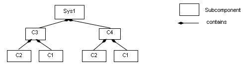

Previous
Next
Previous
Next 
| 4.5 Subcomponents |
A subcomponent represents a component contained
within another component, i.e., declared
within a component implementation. Subcomponents contained in a component implementation
may be instantiations of component implementations that contain subcomponents themselves.
This results in a component containment hierarchy that ultimately describes the whole physical
system as a system instance. Figure 4 provides an illustration of a containment hierarchy using
the graphical AADL notation (see Annex A). In this example, Sys1 represents a system. The
implementation of the system contains subcomponents named C3 and C4. Component C3, a
subcomponent in Sys1’s implementation, contains subcomponents named C1 and C2. Component
C4, another subcomponent in Sys1’s implementation, contains a second set of subcomponents
named C1 and C2. The two subcomponents named C1 and those named C2 do not violate the
unique name requirement. They are unique with respect to the local namespace of their containing
component’s local namespace.

Figure 4 Component Containment Hierarchy
A subcomponent declaration may resolve required subcomponent
access declared in the
component type of the subcomponent. For details on required subcomponent access see Section
8.4.
A subcomponent can be declared to apply to specific modes
(rather than all modes) defined within
the component implementation.
Subcomponents can be refined as part of component implementation
extensions. Refinement
allows classifier references to be completed, and subcomponent property values to be associated.
The resulting refined subcomponents can be refined themselves.
Syntax
subcomponent ::=
defining_subcomponent_identifier
:
component_category [ component_classifier_reference ]
[ { { subcomponent_property_association
| contained_property_association }+ } ]
[ in_modes ]
;
subcomponent_refinement ::=
defining_subcomponent_identifier
: refined to
component_category [ component_classifier_reference ]
[ { { subcomponent_property_association
| contained_property_association }+ } ]
[ in_modes ]
;
component_classifier_reference ::=
unique_component_type_name [ .
component_implementation_name ]
NOTES:
The above grammar rules
characterize the common syntax for subcomponent of all component
categories. The sections defining each of the component categories will specify further restrictions
on the
syntax.
Naming Rules
The defining identifier of a subcomponent declaration
placed in a component implementation must
be unique within the local namespace of the component implementation that contains the
subcomponent.
The defining identifier of a subcomponent refinement
must exist as a defining subcomponent
identifier in the local namespace of an ancestor component implementation.
The component type identifier or the component implementation
name of a component classifier
reference must exist in the specified (package or anonymous) namespace.
NOTES:
The Sample_Manager in the example section below illustrates each kind of resolution.
Legality Rules
The category of the subcomponent declaration must be
identical to the category its corresponding
component classifier reference.
The component type named in the component classifier
reference of a subcomponent refinement
must be the component type of the subcomponent being refined if the subcomponent being refined
has a component type declared. The component implementation named in the component
classifier reference of a subcomponent refinement must be the component implementation of the
subcomponent being refined if the subcomponent being refined has a component type declared.
If the subcomponent declaration contains an in_modes statement and any of its
property
associations also contains an in_modes statement, then the modes named in the property
association must be a subset of those named in the subcomponent declaration. For more detail
on the semantics of in_modes
statements see Section 11.1.
Semantics
Subcomponents declared in a component implementation
are considered to be contained in the
component implementation. Contained subcomponents are instantiated when the containing
component implementation is instantiated. Thus, the component containment hierarchy describes
the hierarchical structure of the physical system.
A component implementation can contain incomplete
subcomponent declarations, i.e.,
subcomponent declarations with no component classifier references or the component classifier
reference only consists of a component type name for a component type with more than one
component implementation. This is particularly useful during early design stages where details
may not be known or decided. Such incomplete subcomponent declarations can be refined in
component implementation extensions.
The optional in_modes subclause specifies the modes in which the subcomponent is active.
A subcomponent can have property associations for its
own properties, or a contained property
association for the properties of its subcomponents and their subcomponents, as well as those
subcomponents’ features, modes, subprogram call sequences, connections, and flows (see
Section 10.3). Subcomponent refinements may declare property associations – that override the
property values declared in the subcomponent being refined.
NOTES:
The example below illustrates
the use of component type only as data component classifier. This is
sufficient for implementation methods to perform analysis and to generate a physical system
implementation from the AADL specification. In case of process components, the process component
classifier reference must refer to a process implementation if the implementation method must process
the complete system instance, e.g., performs scheduling analysis. In other words, some implementation
methods and component categories require component classifier references to component
implementations, while for others the component type reference is sufficient.
Examples
The example illustrates modeling of source text data
types as data component types without any
implementation details. It illustrates the use of package to group data component type
declarations. It illustrates both component classifier references to component types and to
component implementations. It illustrates the use of ports as well as required and provided data
access. In that context it illustrates the ways of resolving required access.
package Sampling
public
data Sample
properties
Source_Data_Size
=> 16 B;
end Sample;
data Sample_Set
properties
Source_Data_Size
=> 1 MB;
end Sample_Set;
data Dynamic_Sample_Set extends
Sample_Set
end Dynamic_Sample_Set;
end Sampling;
thread Init_Samples
features
OrigSet : requires
data access Sampling::Sample_Set;
SampleSet : requires
data access Sampling::Sample_Set;
end Init_Samples;
thread Collect_Samples
features
Input_Sample : in
event data port Sampling::Sample;
SampleSet : requires
data access Sampling::Sample_Set;
end Collect_Samples;
thread implementation Collect_Samples.Batch_Update
refines type
Input_Sample: refined
to
in event data port Sampling::Sample {Source_Name =>
″InSample″; };
end Collect_Samples.Batch_Update;
thread Distribute_Samples
features
SampleSet : requires
data access Sampling::Sample_Set;
UpdatedSamples : out
event data port Sampling::Sample;
end Distribute_Samples;
process Sample_Manager
features
Input_Sample: in event
data port Sampling::Sample;
External_Samples: requires
data access Sampling::Sample_Set;
Result_Sample: out
event data port Sampling::Sample;
end Sample_Manager;
process implementation Sample_Manager.Slow_Update
subcomponents
Samples: data Sampling::Sample_Set;
Init_Samples : thread
Init_Samples;
-- the required access
is resolved to a subcomponent declaration
Collect_Samples: thread
Collect_Samples.Batch_Update;
Distribute: thread
Distribute_Samples;
connections
data access Samples
-> Init_Samples.SampleSet;
data access External_Samples
-> Init_Samples.OrigSet;
data access Samples
-> Collect_Samples.SampleSet;
event data port
Input_Sample -> Collect_Samples.Input_Sample;
data access Samples
-> Distribute.SampleSet;
event data port
Distribute.UpdatedSamples -> Result_Sample;
end Sample_Manager.Slow_Update;